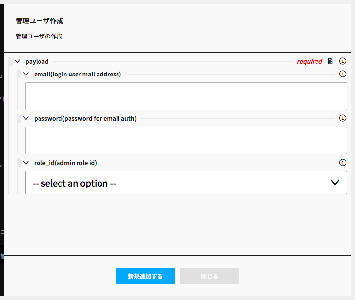

Vironユーザを管理する
Vironサーバを利用するユーザに適切なロールを割り当てたり、ユーザの追加/削除を行います。
Email認証とOAuth認証で運用が異なるため、認証方式別に記述します。
Email認証の場合
ユーザが利用を開始する前に、運用管理者がユーザを追加する必要があります。
Step1 - Viron 管理ユーザ コンポーネントを開く

左カラムのViron 管理ユーザボタンをクリックしてコンポーネントを開きます。
Step2 - 管理ユーザ作成 モーダルを開く

コンポーネント下部の管理ユーザ作成をクリックしてモーダルを開きます。
Step3 - 管理ユーザを作成する

必要な情報を入力して管理ユーザを作成します。
- email
- ログインIDとなるユーザのメールアドレスです。
- password
- ログインパスワードです。初回ログイン時に変更させるよう促してください。
- role_id
- ユーザ権限です。ユーザの役割に適したロールを設定してください。
- superロールは管理メニューを含めたすべての操作が行えます。取扱いには十分注意してください。
GoogleOAuth認証の場合
OAuthでは認証をGoogle側で行うため、あらかじめVironに管理ユーザを登録しておく必要はありません。
初回ログイン時に管理ユーザが自動的に作成され、初期ロールが付与されます。
必要に応じて役割を変更してください。